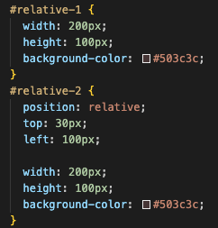
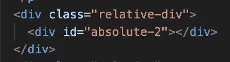
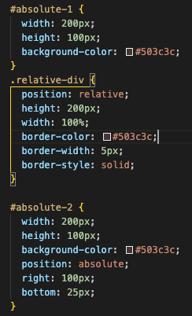
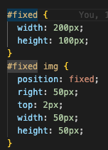

<!DOCTYPE html>
<html lang="en">
  <head>
    <title>HTML CSS</title>
    <meta charset="UTF-8" />
    <meta name="viewport" content="width=device-width, initial-scale=1.0" />
    <link href="../styles/main.css" rel="stylesheet" type="text/css" />
    <link rel="preconnect" href="https://fonts.googleapis.com" />
    <link rel="preconnect" href="https://fonts.gstatic.com" crossorigin />
    <link
      href="https://fonts.googleapis.com/css2?family=Bebas+Neue&family=Old+Standard+TT&display=swap"
      rel="stylesheet"
    />
  </head>
</html>
<body>
  <div class="wrapper">
    <header>
      
      <h1>Katie's learning blog</h1>
      <nav>
        <div class="nav-container">
          <ul>
            <li><a href="../index.html">Home</a></li>
            <li>
              Tech
              <ul class="sub-nav">
                <li>
                  <a href="javascript-dom.html">JavaScript and DOM</a>
                </li>
              </ul>
            </li>
            <li>
              Core
              <ul class="sub-nav">
                <li>
                  <a href="identity-values.html">Idenitity and values</a>
                </li>
                <li>
                  <a href="te-houtaewa-template.html">Te-houtaewa</a>
                </li>
                <li>
                  <a href="emotional-intelligence.html">EQ vs IQ</a>
                </li>
              </ul>
            </li>
          </ul>
        </div>
      </nav>
    </header>
    <main>
      <div>
        <h1>Research Project</h1>
        <h2 class="research-h2">
          What are the differences between relative, absolute, and fixed
          positioning?
        </h2>
        <p class="date">17 January 2023</p>
      </div>

      <section>
        <div>
          <p>
            All elements default as block - meaning they take up the who width
            of the page. The element's position in the block is default as
            static- top, left side of their parent container. <br />
            Position: static.<br />
            You do not need to define this position as it is the default for all
            elements. There are 3 other position values that can allow you to
            change the layout of your html page.
          </p>
          <ul>
            <li>Relative</li>
            <li>Absolute</li>
            <li>Fixed</li>
          </ul>
        </div>
        <div>
          <h2 class="research-h2">Relative</h2>
          <p>
            This allows you to position your element relative to its default
            static position. You apply this by adding offset properties - top
            (moves away from the top, so downwards), bottom (moves away from the
            bottom, upwards), left (moves away from the left, to the right),
            right (moves away from the right side, to the left) think opposites.
            You can specify values in pixels, ems, or percentages.
          </p>
          <p>The element below has a static position.</p>
          <div id="relative-1"></div>
          <p>
            This is what the element would look like with a relative position
            with 30px top and 100px left.
          </p>
          <div id="relative-2"></div>
        </div>
        <div class="relative">
          <p>Here is the css code for both the static and the relative.</p>
        </div>
        <div class="relative">
          
        </div>
        <div class="absolute">
          <h2 class="research-h2">Absolute</h2>
          <p>
            When an element’s position is set to absolute, all the other
            elements on the page will then ignore the element and act like it is
            not present on the page. It is removed from the normal flow of the
            document. This may lead to absolute elements overlapping others. The
            element will then be positioned relative to its closest positioned
            parent element or and if there isnt one it will base its position on
            the html tag, which is the top left hand of the page. You then use
            the same offset properties as relative to determine the final
            position from there.
          </p>
          <p>This is the static element.</p>
        </div>
        <div id="absolute-1"></div>

        <p>
          This next element will be relative to the parent div container(which
          has a position of relative) with 100px right and 25px bottom. The
          border represents the div.
        </p>
        <div class="relative-div">
          <div id="absolute-2"></div>
        </div>

        <div class="relative">
          <p>
            Here is the HTML and CSS code for absolute. You can see the parent
            element is set to relative.
          </p>
        </div>
        <div class="relative">
          
          
        </div>
        <div>
          <h2 class="research-h2">Fixed</h2>
          <p>
            A fixed element does not move from its position even if the page is
            scrolled. You use the same offset properties and it is relative to
            the viewport. The signpost image you would have seen on the top
            right is fixed. It has a offset property of top: 2px and right 50px.
          </p>
        </div>
        <div id="fixed">
          
        </div>
        <div class="relative">
          <p>Here is the css code for fixed.</p>
        </div>
        <div class="relative">
          
        </div>
        <div class="research-h2">
          <h2>Where I am at</h2>
          <p>
            There are so many posibilities with the use of positioning and even
            though I understand the basic concepts when you start adding in more
            code and elements the positioning can soon start to have a lot of
            bugs! I think for me the more I explore and play the more problems
            and solutions I will learn!
          </p>
        </div>
      </section>
    </main>
    <footer>2024 Katie's learner blog</footer>
  </div>
</body>
